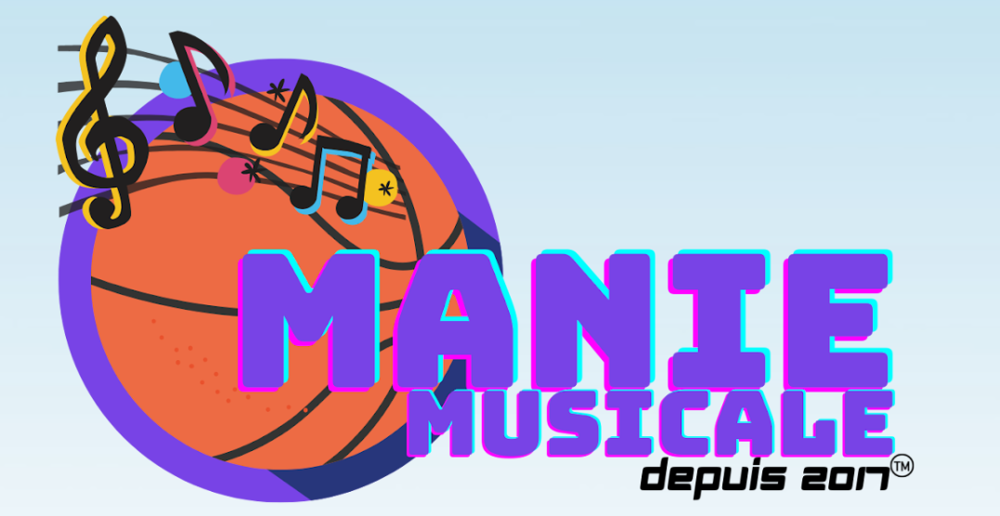
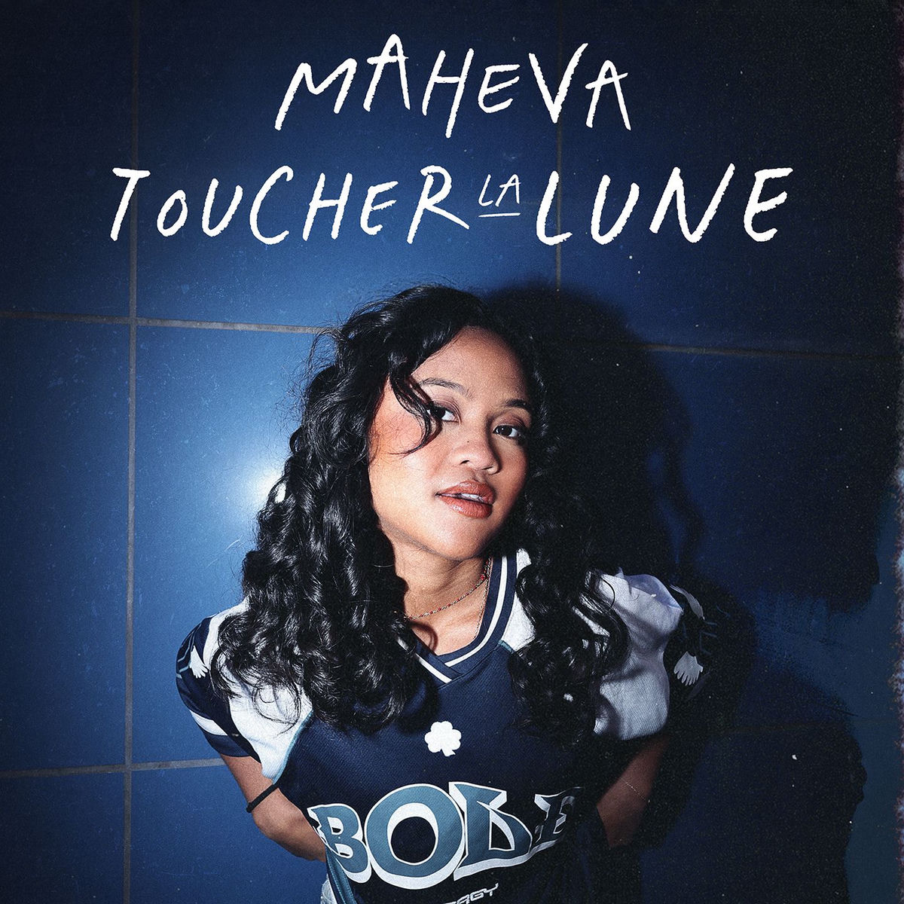

Manie Musicale is an annual bracket-style competition for students and teachers of French. Similar to March Madness basketball in the United States, participants try to predict which of 16 francophone songs will be the most popular. Once the tournament starts, voters decide which song will advance to the next round until we have a champion. The best part? Students learn French while having fun with students from all over the world.
Son vrai nom est Frédéric Carrier. Il est né près de Montréal au Canada, en 2002. À l'âge de 14 ans, il découvre sa passion pour la production. Il apprend à jouer de la guitare en regardant YouTube à l'âge de 15 ans. C'est un rappeur qui aime aussi la musique pop et hip hop. Le "z" dans son nom de scène représente son côté artistique.

Elle est née à Toulouse, en France, en 2002. Elle a des origines malgaches (de Madagascar). Elle adore le sport: surtout le tennis, le football et le volley. Elle est nommée championne du monde en guitare à l'âge de 17 ans à Los Angeles. Elle est influencée par son frère qui est aussi musicien. Elle a fait des études de pharmacie mais a arrêté pour poursuivre sa carrière musicale.
Lenaïg est née en Bretagne, en France. • Elle mélange la pop électrique avec le rock. Lenaïg a plus de trente tatouages. C'est une façon d'exprimer son côté artistique. Elle a commencé à jouer de la guitare à l'âge de 13 ans. Son prénom est breton et veut dire "éclat de soleil." Lenaïg est aussi professeure de maths. Elle a deux chiens Staffies dont un qui s'appelle Octave.
Fredz
La chanson est lente et agréable.-Joe
Le chanteur est doué-bob
La chanson pourrait être plus entrainante.-john
La chanson me fait danser.-emma
Le clip est un histoire intéressant-mia
La chanson me met de bonne humeur-jasmine
Maheva
La chanson est entraînante et bonne. - jennie
La chanteuse a une belle voix. -lia
La chanson est un tube à la mode. -sophie
La chanson me fait danser. -olivia
La chanson me met de bonne humeur.
La chanson est à la mode et dynamique - lucas
Lenaig
La chanson est bonne. - elena
La chanson est joyeuse et entraînante. - Hans
La chanson est agréable. -olaf
La chanson me plait beaucoup - elsa
La chanson est dynamique - kristoff
Je l'écouterais encore - anna